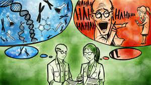

Stereotype Threat

First off, what exactly is stereotype threat. Stereotype threat is when people are or feel to be at risk of confirming negative stereotypes about their gender, race, or social group. I’m sure everyones heard “White men can’t jump”. Yeah its just a title of a movie, but it is also a stereotype.
Stereotype threat can destroy how you think about your ability to learn. Studies have shown that stereotype threat can lower the intellectual performance of African-Americans taking the SAT reasoning test, due to the stereotype that African-Americans are less intelligent that other groups.
I personally have fallen victim to this. Back when I was 21 I decided to get my first tattoo, completely visible on my arm. Some of the customers, where I worked at the time, would refuse to have me help them because I didn’t seem trust worthy. The two years prior to my tattoo at the same job I never had that happen. Fast forward a couple of years to a new job in a new town, I was turned down the position in the IT dept. for the reason that I had tattoos, so I must have dropped out of high school and not be educated. Now how does this all tie to stereotype threat you ask? Well the truth is I barely graduated high school on time, and then I delayed going to a college for two years afterwards, just working a dead end job. Once I went back to school, I managed to drop out after a year. I looked around at the people that were around me at the time where I worked. The ones that had tattoos fell into the group of little to no schooling after high school, and a couple of them didn’t finish high school. I started to see the similarities between them and myself. So know all my brain can do is dwell on this and come to the realization that I’m not smart. That though stuck with me for a good year. I would work up the nerve to try and pursue something of interest. I would try and read some coding books and the first thing I got stuck on would bring back the anxiety that I can’t do it because I’m not smart enough. The decision to apply to a year animation and 3D modeling course was the best thing for me. I pushed myself to try to be the best in the class and have the best renders out of the class. I wasn’t the best, nor was I close to the best, but I completed it and learned a new skill and proved to myself that I do have intelligence and I can do anything if I push myself to.
What can we do about this? First is yourself. If you don’t believe in the stereotype, there’s a good chance that you won’t fall victim to it. Second is to keep an eye and ear open for it. Everyday all around, there’s always some kind of stereotyping. I don’t believe all of it is aimed to be mean or put someone down. It’s become so abundant that I feel that people do it without even noticing they are. That’s where you have to catch it, even if you're an outside person that over hears it, step in an say something. It’s not a green light to be mean to the person that said it, there’s a good chance that they had no idea, or even possibly that they meant it in sarcastic way. It just that if everyone in a group can think as positive about everyone else in a group, they can create amazing things. If people give the easy task to someone, because well he has tattoos so he must have no idea how to do this, it limits and harms not only the person, but the group as well.